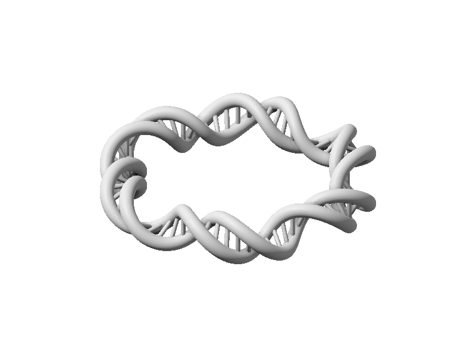

dna-loop
Drafted with AI, not yet reviewed
A double helix wound round a ring, its strands joined by rungs; ported from OpenSCAD, where each strand is 360 rings of 36 points, turned into place one by one and stitched into a polyhedron.
Here the model is built straight, along Z, and bent into the ring at the end: bend() makes the length along Z the length round the ring. Straight, a strand is a helix, whose wire helix() keeps round, square to the strand; the OpenSCAD design tilts each ring of points towards that by a guessed angle. The rungs are one rung, repeated along Z, turned in each repeat to where the strands are.

Files
Source
// SPDX-License-Identifier: 0BSD // // A double helix wound round a ring, its strands joined by rungs; ported // from OpenSCAD, where each strand is 360 rings of 36 points, turned into // place one by one and stitched into a polyhedron. // // Here the model is built straight, along Z, and bent into the ring at the // end: bend() makes the length along Z the length round the ring. // Straight, a strand is a helix, whose wire helix() keeps round, square to // the strand; the OpenSCAD design tilts each ring of points towards that // by a guessed angle. The rungs are one rung, repeated along Z, turned in // each repeat to where the strands are. // --- Parameters --- const RING = 25.0; // radius of the ring the helix winds round const OFFSET = 2.0; // how far the rungs sit off the helix's axis const GAP = 4.0; // between the strands, along a rung const TWISTS = 6; // turns of the helix round the ring const RUNGS = 72; const STRAND = 3.0; // diameter of a strand const RUNG = 1.0; // and of a rung const PREVIEW = false; // show the ring // --- Straight helix --- // A turn of the helix takes this much length along Z, and runs clockwise // looking along the ring, as in the OpenSCAD design: a negative pitch. let pitch = -TAU * RING / TWISTS; // Each strand passes OFFSET out from the axis and half a rung's length to // one side of it. let half = (GAP + STRAND) * 0.5; let reach = hypot(OFFSET, half); let phase = atan2d(half, OFFSET); let wire = helix(circle(STRAND * 0.5), reach, pitch); let strands = union(wire.rotate_z(phase), wire.rotate_z(-phase)); // One rung at every step along Z, turned with the strands: the step's // index, its height and its turn are constant over the step, so each rung // is a rigid copy and its field stays exact. let step = TAU * RING / RUNGS; let index = round(z / step); let turn = index * step * TAU / pitch; let c = cos(turn); let s = sin(turn); let rung = cylinder(RUNG * 0.5, GAP + STRAND * 0.5).rotate_x(90).move([OFFSET, 0, 0]); let rungs = rung.remap(x * c + y * s, y * c - x * s, z - index * step); // --- Ring --- // The torus round it changes no value, but tells interval arithmetic where // the model ends, which the turned rungs hide. let model = union(strands, rungs).bend(RING); let model = max(model, torus(RING, reach + STRAND * 0.5)); bounds([-33, -33, -7], [33, 33, 7]); resolution(10); draw(model); if PREVIEW { draw_rgb(torus(RING, STRAND * 0.5), 0.67, 0.67, 0.67); }